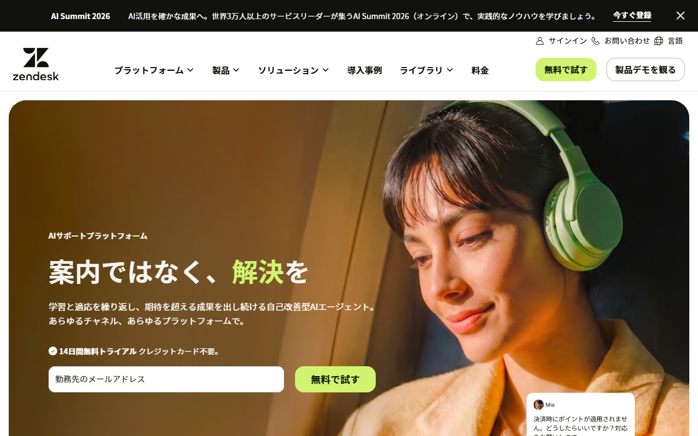
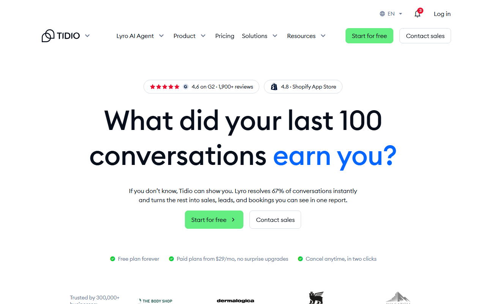

Zendeskの評判・口コミ｜「使いづらい」「高い」の理由と向いているチーム規模
Zendeskは、メールやチャットなどの問い合わせをまとめ、複数の担当者で対応状況を共有するカスタマーサポート製品です。
この記事では、「使いづらい」「高い」という評判が当てはまりやすいチームを紹介します。料金や日本語対応のほか、代わりになる製品も取り上げます。
Zendeskの評判を一覧で（良い点4つ・気になる点4つ）
- 良い点：一元管理・FAQ・連携・日本語
- 気になる点：設定・日本語資料・個別相談・席数課金
- 料金：Support Teamは1人月$19
- 無料枠：なし／14日間の無料体験
- 課金単位：エージェント1人ごと
迷ったらZendeskがおすすめです。メール・チャット・電話を1か所で扱え、日本語UIと日本語ヘルプもあります。
料金、製品構成、14日間の無料トライアルを日本語で見られます。
ZendeskはSupportとSuiteで機能の範囲が異なる

日本語ページには「料金」と「無料で試す」があり、14日間の無料トライアルを案内しています。
「高機能で複雑」「高い」という口コミは、SupportとSuiteのどちらに対する声かで意味が変わります。 まず、現行プランの違いを押さえておきましょう。
- Support Team：メールを中心にしたチケット管理の基本プラン
- Suite Team：Support Teamに、AIエージェント、ナレッジベース、アクションビルダー、オムニチャネルルーティング、メッセージング/チャット、テレフォニーが加わる
- Suite Professional：さらに管理者向けCopilot、アプリビルダー、文章作成ツール、クイックレポート、スキルベースルーティング、IVRツリー転送が加わる
- Suite Enterprise + Copilot：最上位プランで、料金は営業担当への問い合わせ
Supportはメール中心のチケット管理
Support Teamは、届いたメールをチケットとして一覧にする基本プランです。担当者の割り当てや対応状況も管理できます。対象は、チャットや電話、ヘルプセンターを使わないチーム。メールの対応漏れを防ぎたい場合は、Supportの口コミに絞ると実態が見えます。
Suiteはチャット・電話・ヘルプセンター・AIまで含む
「機能が多すぎて使いこなせない」という声は、主にSuiteへの評価です。AIエージェントやCopilotの精度は問い合わせ内容で変わるため、この記事では各機能の有無だけを扱います。
良い評判・メリット
良い評判では、問い合わせの一元管理やヘルプセンターがよく挙がります。連携の多さや日本語の公式情報も好評です。
問い合わせを1か所に集め、対応漏れを防げる
特に多いのは、メールやチャットに散らばった問い合わせを1つの画面で管理できるという声。窓口ごとの状況が一覧になり、対応漏れが減ったとの評価もあります。問い合わせ対応を開発担当者の仕事から切り離せた事例も、国内の解説記事に載っています。
Suiteのオムニチャネルルーティングでは、問い合わせを同じルールで担当者へ振り分けられます。対象はメール・チャット・電話です。
ヘルプセンターで自己解決を増やせる
Suite Team以上では、ナレッジベースで「よくある質問」を公開できます。返信を早めるというより、問い合わせ自体を減らす仕組みです。
連携や拡張の選択肢が多い
口コミサイトでよく名前が挙がるのは、Slack連携。Zendesk純正の「Slack for Zendesk Support」なら、Slack上でチケットを扱えます。作成・閲覧・コメントに対応しています。Suite Professionalでは、アプリビルダーによる画面追加も可能。
日本語UIと日本語の公式情報がそろっている
管理画面だけでなく、公式サイトとヘルプも日本語に対応しています。料金や請求、解約の案内も日本語なので、稟議資料を作るために英語ページを訳す手間が省けます。
悪い評判・デメリットを原因別に整理
同じ「使いにくい」という声でも、原因はそれぞれ異なります。 主な不満は次のとおりです。
- 設定項目が多く、立ち上げに時間がかかる
- 日本語表記や日本語の資料が追いついていない
- 困ったときのサポートが受けにくい
- 担当者が増えるほど費用が膨らむ
設定項目が多く、立ち上げに時間がかかる
「使いづらい」という口コミでは、操作画面よりも、トリガー・自動化・ビュー・権限などの設定の多さが問題にされています。Suiteで窓口を増やすほど、設定する項目も増えていきます。
解説記事の中には、初期設計の不足を使いにくさの主因に挙げるものもあります。問い合わせの振り分け方を決めずに導入すると、不満が大きくなるという指摘です。
日本語表記や日本語の資料が追いついていない
公開レビューで指摘されるのは、不自然な訳語。日本語のヘルプ記事が英語版より少ない、という声も見られます。細かな設定を調べるときは、英語の資料が必要になるようです。
困ったときのサポートが受けにくい
目立つのは、「問い合わせても解決まで時間がかかる」「日本語で相談しにくい」という声。個別相談の対応範囲は公開されていません。日本語での相談が欠かせない場合は、契約前にどこまで対応してもらえるか聞いておきましょう。
担当者が増えるほど費用が膨らむ
料金はエージェント1人ごとにかかり、Suiteを選べばSupportより単価が上がります。最上位プランの料金は、営業担当への問い合わせ。「高い」という評判は、この席数課金を人数分積み上げたときの印象から来ています。
その評判は自社に当てはまる？規模と窓口の数で判断する
悪い評判がどれだけ問題になるかは、担当者と窓口の数でおおよそ見分けられます。 ここで挙げる人数は、問い合わせの複雑さによって前後する目安です。
担当1〜2名・メール中心なら、Support Teamか軽いツールと比べる
Support Teamは年払いなら1人$19で、2人でも月$38ですが、常設の無料プランはありません。Help ScoutのFreeは5ユーザーまで無料で、使えるのは受信箱1つとヘルプ記事1つ。やり取りする相手が月100件以内なら、Zendeskの利用料がそのまま固定費の差になります。
一方、Suiteではチャットや電話、AIエージェントを使い切れない可能性があります。1〜2名のチームでは、機能の多さが「使いづらい」という不満につながりがちです。
それでもSupport Teamが合うのは、次の条件に当てはまる場合です。
- 管理画面を日本語で使いたい（Help Scoutの管理画面は英語）
- 近いうちにチャットや電話の窓口を足す予定があり、Suiteへ上げて同じ画面のまま広げたい
どちらにも当てはまらないなら、無料のヘルプデスクやチャットツールと比べるほうが選びやすくなります。
数名〜十数名で複数の窓口を持つなら、Suiteの評価が生きる
メールやチャット、電話を複数人で担当するチームでは、一元管理とルーティングが役立ちます。ヘルプセンターへの評価も、そのまま当てはまります。一方、避けにくいのが立ち上げの手間。最初の1か月はメール窓口だけをつなぎ、トリガーとビューで割り当て方を決めます。その後、オムニチャネルルーティングでチャットや電話を足すと進めやすくなります。
条件に合うスタートアップは支援プログラムも確認する
Zendeskには、スタートアップ向けのZendesk for Startupsがあります。主な条件は次のとおりです。
- 新規契約者
- 従業員250人未満
- Series B以下
- テック企業
- 設立10年未満
従業員50人以上の場合は、パートナー経由の紹介が必要です。
承認されるとSuite Professionalを最大50席まで6か月間無償で使え、条件によっては最長2年まで延びます。
安全性と契約面で確認しておきたいこと
データの扱い・支払い方法・解約条件は、契約前に見ておきたい項目です。 口コミではほとんど話題になりませんが、導入後には変えにくい部分です。
セキュリティとデータの扱い
Zendeskに預けるのは、顧客の問い合わせ内容や個人情報です。しかし、公開レビューでは安全性がほとんど話題にならず、評判だけでは判断できません。契約前に聞きたいのは、データの保管場所。二要素認証とシングルサインオンを使えるプランも、営業窓口に尋ねておきましょう。請求情報を扱えるのは、アカウントオーナーと請求管理者だけ。経理担当を請求管理者にするかも決めておくと、社内の分担がはっきりします。
日本からの支払いと請求書
オンライン購入では通常、クレジットカードで支払います。PayPalも管理画面から設定できます。銀行振込などの可否は、アカウントの条件次第。希望する場合は、担当者への連絡が必要です。日本発行のカードはブランド別の対応状況が公開されていないため、購入画面で使えるか確かめてください。
請求書は、アカウントオーナーか請求管理者が管理画面からPDFで閲覧・ダウンロードできます。請求通貨はUSD・EUR・GBP・BRLの4種類で、円建ては対象外。海外サービスの消費税やインボイスの扱いは契約形態によって変わります。経理処理は税理士に確認してください。
解約とプラン変更
解約は、アカウントオーナーが管理画面から手続きし、請求サイクルの末に反映されます。営業担当が付いているアカウントでは、サポートへの連絡が必要です。年払いから月払いへ変更できるのは、現在の年契約が終わった後。変更には承認を要します。年契約途中の差額や返金条件は公開されていないため、年払いを選ぶ前に問い合わせておきましょう。
料金ページでは、SupportとSuiteのプラン構成や年払いの月額換算を見比べられます。
料金と始め方
「高い」かどうかは、プランの単価に担当者数を掛けた総額で判断します。
料金の要点
年払いの月額換算で、1エージェントあたりの料金は次のとおりです。
- Support Team：$19/エージェント/月
- Suite Team：$55/エージェント/月
- Suite Professional：$115/エージェント/月
- Suite Enterprise + Copilot：営業担当への問い合わせ
- 年払いは月払いより20%安い
たとえばSuite Teamを3人で使うと月$165で、1ドル=159円換算（執筆時点の目安。為替で変動）で約26,235円です。Support Teamで足りるか、Suiteの機能が必要かで、同じ人数でも総額は3倍近く変わります。
14日間の無料トライアルで確かめたいこと
無料トライアルは14日間で、開始時のカード登録は不要ですが、終了後も使い続けるには有料プランを購入します。期間内に次の点を確かめておけば、悪い評判が自社に当てはまるかを判断できます。
- 実際の問い合わせ用メールをつなぎ、チケットの割り当てから返信までを1週間回せるか
- 普段使う設定画面に、意味の取りにくい日本語表記がないか
- 困ったときの問い合わせ窓口がどこにあり、返答が日本語で届くか
「無料で試す」から、カード登録なしの14日間トライアルへ進めます。
合わないと感じたときの代替候補
機能が多く固定費も高いと感じたらHelp Scout、チャット窓口だけで足りるならTidioが候補です。 Help Scoutは英語画面で、Tidioも日本語での利用を案内していません。
Help Scout：設定の重さと費用を抑えたいヘルプデスク

公式サイトは英語表示で、「Start for Free」と「Get a Demo」の入口が見えます。
Help Scoutは、共有受信箱（Inbox）とヘルプ記事（Docs）に機能を絞ったヘルプデスク製品です。Freeプランは5ユーザーまでで、使えるのはInbox 1件とDocs 1件。やり取りする相手（コンタクト）が月100件以内なら、1〜2名のメール対応を0円で始められます。
有料プランは月払い表示でStandardが1ユーザー$25/月からです。一方、Zendesk Support Teamの$19は年払いの月額換算。課金期間が異なるため、有料プランの金額を単純には比べられません。StandardとPlusのトライアルは15日間で、カード登録は不要。初回の支払いには30日間の返金保証があり、請求書はPDFでダウンロードできます。
上部の「Pricing」から、Freeと有料プランの条件を見比べられます。
Tidio：チャット窓口を小さく始めたい場合

公式サイトは英語表示で、画面上部と中央に「Start for free」があります。
Tidioはウェブサイトのライブチャットが中心で、メール対応をチケットで管理するヘルプデスクとは役割が異なります。Freeプランは10席まで使えますが、課金対象の会話は月50件まで。7日間のトライアルはカード登録不要で、終了後は自動的にFreeへ移ります。
有料のStarterは、年払い表示で$24.17/月から。いつでも解約でき、次回請求日まで使った後にFreeへ戻ります。サイト上のチャットだけを用意したい場合に向いています。
料金ページには、Freeの会話数上限と有料プランの月額が載っています。
まとめ
Zendeskの評価は、窓口と担当者の数によって変わります。
- 良い評判：問い合わせの一元管理／ヘルプセンターによる自己解決／連携の広さ／日本語の公式情報
- 悪い評判：設定の多さ／日本語資料の不足／サポートの受けにくさ／席数課金
- 複数の窓口を数名以上で回すならSuiteが候補、1〜2名のメール中心ならSupport Teamか軽いツールと比べる
料金とトライアルの条件を見比べたうえで、無料体験の申し込みへ進めます。